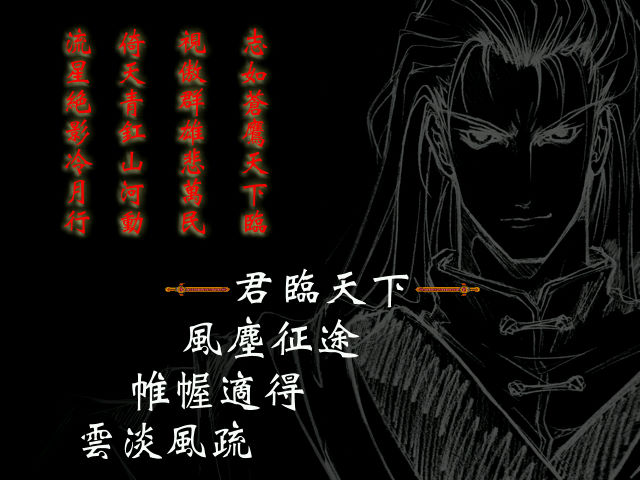
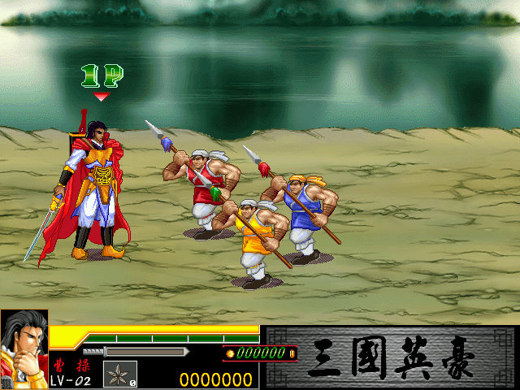

名稱：三國英豪1 (中文版) 簡介：龍愛2001年出品的動作遊戲 [待補]。

保護：光碟，破解碼（放入光碟才有背景音樂）： SangoHero.exe 85 C0 75 2A 8B 15 -- -- EB -- -- -- 85 C0 74 28 8B 0D -- -- EB -- -- -- 85 C0 74 27 A1 54 -- -- EB -- -- -- 密技：在進入大地圖時，將滑鼠移到空的位置，然後輸入cheatcode，有聽到音效即啟動成功。 F1 = 無敵 F2 = 怒氣全滿 F3 = 金錢500000 F4 = 可選擇鳳麗華 F5 = 跳關 F6 = 所有招式可用 操作： 1P 2P ------------------------------------------------------------------- 切換物品類型 U PgDn (物品類型有道具、暗器、法術) 選擇藥草／火藥／法術1 1 6 選擇補命丹／斧頭／法術2 2 7 選擇解毒水／血輪 3 8 選擇清醒劑／蝕毒 4 9 選擇詭異果子 5 0 使用物品 K Enter 上移 W 上 下移 S 下 左移 A 左 右移 D 右 攻擊／踢（空中）／確認 H Ins 跳躍 J Del 攻擊+跳躍 = 絕招（需消耗怒氣） 說明： 一、道具類 1.藥草：食用後增加少許的生命值。 2.補命丹：食用後生命值全滿。 3.解毒水：中毒時飲用可將身上所有毒素解除。 4.清醒劑：混亂時飲用，具提神醒腦之功效。 5.詭異果子：奇妙的果子，服用後一段時間內呈現無敵狀態。 二、暗器類 1.火藥：丟出後產生爆炸，對附近敵人產生傷害。 2.斧頭：丟出後可使敵人產生傷害，屬大範圍攻擊武器，殺傷力強。 3.血輪：丟出後具迴旋效果可刺傷敵人。 4.蝕毒：具有腐蝕性之毒水，適合近身攻擊。 三、法術 1.水：可召喚玄武，吐出水靈珠攻擊畫面上之全體敵物。 2.火：可召喚朱雀，使出熾熱火燄攻擊畫面上之全體敵物。 3.地：可召喚白虎，使出烈地落石陣，攻擊畫面上之全體敵物。 4.風：可召喚青龍，使出雷柱閃電，攻擊畫面上之全體敵物。 5.雪：可召喚雪女，使出冰雪風暴，攻擊畫面上之全體敵物。 每個角色最多只能有兩種法術，且只能從戰鬥中獲得，無法購買。